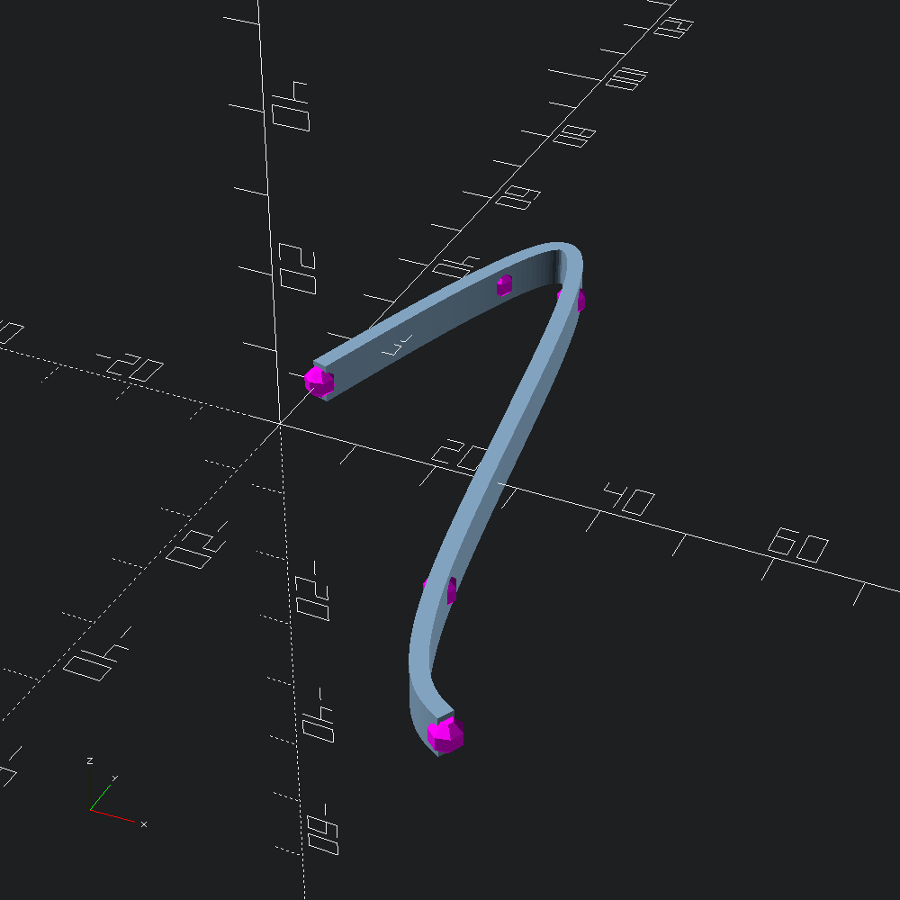

open OCADml
open OSCADmlControl points that our cubic spline will pass through.
let control = [ v2 0. 10.; v2 10. 40.; v2 20. 40.; v2 30. (-20.); v2 40. (-40.) ]Mark our control points with the debugging helper Debug.show_path2 for reference. We don't really need to number these, so we'll ignore the index parameter and use the same sphere for each point.
let marks = Debug.show_path2 Scad.(fun _ -> color Color.Magenta @@ sphere 2.) controlFit a cubic spline to the control points, and interpolate fn points along it using the helper Path2.cubic_spline (lower level functions available in the CubicSpline module), then sweep a rectangle along it.
let line =
let rectangle = Poly2.square ~center:true (v2 2. 5.)
and path = Path3.of_path2 @@ Path2.cubic_spline ~fn:100 control in
Scad.of_mesh @@ Mesh.path_extrude ~path rectangleUnion our control point marks and line sweep shapes and output to file.
let () = Scad.to_file "spline.scad" (Scad.union [ line; marks ])